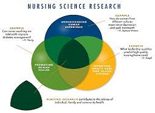
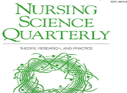
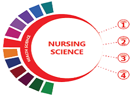
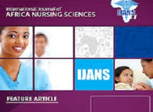

Nursing Science e-Library
Department of Nursing Science
What is nursing science
Author: Elizabeth Ann Manhart Barrett
Nursing science and the space age
Author: Martha E. Rogers
Nursing science and art_ A prospective
Author: Martha E. Rogers

Nursing science_ Major paradigms_ theories_ and critiques
Author: RR Parse
The nature of nursing science
Author: Faye G. Ahdellah

Multiple triangulation_ A methodology for nursing science
Author: ES Mitcbell
Reflections on nursing practice science_ the nature_ the structure_ and the foundation of nursing sciences
Author: DE Orem & SG Taylor
Analysis of integration in nursing science and practice
Author: Robin Whittemore
Advancing nursing science_ Qualitative approaches
Author: Jan R. Atwood

Nursing science_ the transformation of practice
Author: Rosemarie Rizzo Parse

A blueprint for genomic nursing science
Author: Kathleen et al.,
Nursing science in transition
Author: Krishna K. Raheja
The history and philosophy of nursing science and research
Author: Susan R. Gortner
The influence of liberal political ideology on nursing science
Author: Annette J. Browne
Warrantable evidence in nursing science
Author: Dorothy A. Forbes
The state of nursing science_ Hallmarks of the 20th and 21st centuries
Author: Jacqueline Fawcett
Nursing science_ The challenge to develop knowledge
Author: Ada Sue Hinshaw
Critical theory as a framework to enhance nursing science
Author: Martha K. Swartz
The contributions of nursing science to social support
Author: Miriam J. Stewart & Virginia P. Tilden
Nursing science in the global community
Author: Ketefian & Richard W. Redman
Forensic nursing science_ Global strategies in health and justice
Author: Virginia A. Lynch
Patient decision-making behavior_ An emerging paradigm for nursing science
Author: PF Pierce & FD Hicks
Human becoming_ Parse_s theory of nursing
Author: Rosemarie Rizzo Parse